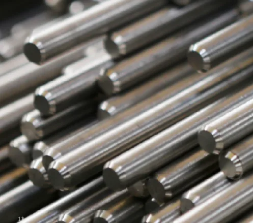

Titanium grades explained: ASTM, GB and AMS equivalents
What a grade number actually controls, the minimum properties behind it, and why an "equivalent" grade on a Chinese mill certificate is not automatically the grade on your drawing.
Titanium is not one material. The same word covers commercially pure metal with four different oxygen ceilings, a half-dozen corrosion-resistant alloys with palladium or molybdenum, and structural alloys such as Ti-6Al-4V that behave nothing like the pure grades. Choosing the wrong one is rarely a small mistake: it shows up as a weld that cracks, a heat exchanger that pits in the second year, or a component that fails the purchaser's incoming inspection against the standard it was ordered to.
This guide covers the grades that actually move in industrial supply — plate, sheet, bar, tube, forgings and fasteners — and the three specification systems buyers most often mix: ASTM, Chinese GB, and AMS.
In this guide
- What a grade number actually controls
- The commercially pure family: Gr.1 to Gr.4
- The alloys: Gr.5, Gr.9, Gr.23 and the Pd / Ni-Mo grades
- Minimum properties at a glance
- Mapping ASTM grades onto GB designations
- Where the equivalence stops being exact
- Choosing in practice: four questions
- Mistakes that show up in enquiries
What a grade number actually controls
Two things, and only two, separate the commercially pure grades from each other: interstitial content — oxygen, nitrogen, carbon and iron — and therefore strength. Titanium at 99.5% purity is soft; oxygen dissolved in the lattice locks slip planes and raises strength while cutting ductility. Grade 1 has the lowest oxygen ceiling and is the most formable; Grade 4 has the highest and is the strongest of the pure grades, at roughly three times the yield strength of Grade 1.
In the alloy grades the mechanism is different: aluminium stabilises the alpha phase and raises strength and creep resistance, vanadium stabilises beta and improves hot workability, palladium and molybdenum-nickel change the electrochemistry of the surface film. That last point matters most for corrosion, and it is the one buyers most often overlook when they substitute "the same strength" material into a chemical duty.
The commercially pure family: Gr.1 to Gr.4
Grade 2 is the default industrial grade and covers the large majority of chemical, marine, desalination and medical-support applications. Grade 1 is chosen when cold forming is severe — deep-drawn liners, expanded tube, complex sheet work — because the lower oxygen content buys ductility at the cost of strength. Grade 3 sits between. Grade 4 is used where pure titanium is required for corrosion reasons but the stress is high enough that Grade 2 would need a thicker wall; it is noticeably less forgiving in forming and welding.
Rule of thumb: if the drawing says Gr.2 and the part is welded, do not "upgrade" to Gr.4 for strength without checking weld procedure and toughness. Higher interstitial content raises strength and lowers the tolerance for poor shielding gas.
The alloys: Gr.5, Gr.9, Gr.23 and the Pd / Ni-Mo grades
Gr.5 (Ti-6Al-4V, Chinese TC4) is the workhorse structural alloy: roughly 828 MPa minimum yield against 275 MPa for Gr.2, and about twice the density-to-strength advantage over stainless steel. It is used for airframe fittings, high-load fasteners, compressor parts, medical instruments and any application where weight is the constraint. It is harder to form, requires more careful welding, and is not the right answer for a chemical vessel simply because it is stronger.
Gr.9 (Ti-3Al-2.5V) sits between the pure grades and Ti-6Al-4V: about 483 MPa minimum yield with good cold formability, commonly used for hydraulic tube and bicycle frame tube.
Gr.23 (Ti-6Al-4V ELI) is the extra-low-interstitial version of Gr.5: same strength level, better toughness and ductility, and the grade normally specified for surgical implants and cryogenic service.
The corrosion grades are where the specification is usually decided. Gr.7 is Gr.2 with 0.12–0.25% palladium; the palladium shifts the corrosion potential and keeps the passive film stable in mildly reducing acids where plain Gr.2 would pit. Gr.11 is the same idea on a lower-oxygen base. Gr.12 (Ti-0.3Mo-0.8Ni) achieves a similar effect more cheaply with molybdenum and nickel, and is widely used in hot chloride and dilute acid service.
Minimum properties at a glance
Values below are the minimum requirements for annealed product under ASTM B265 (plate, sheet, strip) and B348 (bar, rod, billet). Tube under B338 and forgings under B381 carry their own tables; the grade logic is the same but always confirm the clause that applies to your product form.
| Grade | UNS | Nominal composition | Rp0.2 / Rm (MPa, min) | Typical use |
|---|---|---|---|---|
| Gr.1 | R50250 | CP Ti, O ≤ 0.18% | 170 / 240 | Deep drawing, expanded tube, liners |
| Gr.2 | R50400 | CP Ti, O ≤ 0.25% | 275 / 345 | Chemical plant, marine, desalination, general |
| Gr.3 | R50550 | CP Ti, O ≤ 0.35% | 380 / 450 | Moderate strength, pressure parts |
| Gr.4 | R50700 | CP Ti, O ≤ 0.40% | 483 / 550 | Higher-strength pure titanium, thicker walls |
| Gr.5 | R56400 | Ti-6Al-4V | 828 / 895 | Aerospace structures, fasteners, medical |
| Gr.7 | R52400 | Gr.2 + 0.12–0.25% Pd | 275 / 345 | Reducing acids, hot chlorides |
| Gr.9 | R56320 | Ti-3Al-2.5V | 483 / 620 | Hydraulic tube, cold-formed parts |
| Gr.11 | R52250 | Gr.1 + 0.12–0.25% Pd | 170 / 240 | Pd grade where formability is also needed |
| Gr.12 | R53400 | Ti-0.3Mo-0.8Ni | 483 / 550 | Hot brine, dilute acid, heat exchanger tube |
| Gr.23 | R56407 | Ti-6Al-4V ELI | 828 / 860 | Implants, cryogenic, fracture-critical parts |

Mapping ASTM grades onto GB designations
Chinese material is designated under GB/T 3620.1, and the designations look like a one-to-one translation of the ASTM system. In most purchasing documents they are treated as such. Strictly, they are equivalent families, not identical specifications.
| GB designation | Nearest ASTM grade | What to check before accepting as a substitute |
|---|---|---|
| TA1 | Gr.1 | Oxygen ceiling and iron limit |
| TA2 | Gr.2 | Oxygen ceiling; tensile and yield minima |
| TA3 | Gr.3 | Oxygen ceiling; product form availability |
| TA9 | Gr.7 | Palladium range 0.12–0.25% |
| TA10 | Gr.12 | Mo and Ni ranges, annealing condition |
| TC4 | Gr.5 | Al and V ranges, oxygen ceiling, heat treatment |
| TC4 ELI | Gr.23 | Interstitial limits (O, Fe, N) |
| TA15 (Ti-6.5Al-2Zr-1Mo-1V) | No direct ASTM grade | Near-alpha alloy; substitutions are engineering decisions, not paperwork |
| TC11 (Ti-6.5Al-3.5Mo-1.5Zr-0.3Si) | No direct ASTM grade | High-temperature alloy; no drop-in equivalent |
AMS sits above both as a tighter system. AMS 4911 covers Ti-6Al-4V sheet, strip and plate; AMS 4928 covers Ti-6Al-4V bar, wire, forgings and rings; the AMS 4900 series covers the commercially pure grades. AMS requirements typically add microstructure control, tighter chemistry windows and additional testing on top of the ASTM baseline, which is why aerospace buyers quote AMS rather than ASTM.
Where the equivalence stops being exact
Three things bite in practice.
Chemistry windows differ. The oxygen ceiling that separates one pure grade from another is not identical in every system, and oxygen is exactly what sets strength and ductility. A certificate that satisfies a GB designation may still miss the ASTM limit on a specific element — or satisfy it by a margin so thin that a re-test on a second sample fails.
Tolerances and condition are separate clauses. Grade says nothing about whether the plate is hot rolled or cold rolled, annealed or stress relieved, pickled or ground, or how much crown and camber is acceptable. Two suppliers can both sell "Gr.2 plate to B265" and deliver material that machines completely differently.
Test requirements differ. Which tests are mandatory, how often they are taken, and whether the certificate is a 3.1 or a 3.2 are all separate from the grade. A certificate can be perfectly valid for the grade and still be rejected by the purchaser's incoming inspection because the standard clause it cites is the wrong one for the product form.
Choosing in practice: four questions
1. What is the medium and the temperature? This decides whether you are in the pure-titanium family at all, and whether you need palladium or molybdenum-nickel. A grade chosen on strength and then asked to survive hydrochloric acid will fail regardless of its mechanical properties.
2. Is strength actually the constraint, or is it stiffness and corrosion allowance? Most chemical equipment fails by corrosion or by wall loss allowance, not by yield. Gr.2 is usually right; Gr.5 is usually the expensive answer to the wrong question.
3. How is it being fabricated? Welded, deep drawn, machined, or threaded? Grade 1 and Gr.9 form better than Gr.4 and Gr.5; Gr.5 machines better than the pure grades but needs sharp tooling and generous coolant; fasteners in Gr.5 gall badly without a dry-film lubricant.
4. What does the approving authority accept? If the end user is aerospace or medical, the answer is usually AMS or an ASTM implant standard (F67, F136), plus a traceability chain back to the melt. No equivalence argument survives an auditor.
Mistakes that show up in enquiries
- Ordering Gr.5 because it is "better". Twice the strength, half the weldability, and no benefit to a corrosion-limited wall.
- Using plain Gr.2 in hot chloride brine. Above roughly 70 °C, crevice attack under gaskets and tube-to-tubesheet joints becomes the design case, and Gr.7 or Gr.12 is the usual answer.
- Treating TA2 as Gr.2 on paper. Ask for the chemistry table, not just the designation, and compare it element by element with the ASTM clause you are buying to.
- Quoting a standard without a condition. "ASTM B265 Gr.2" does not specify annealed versus cold rolled, edge condition, or surface finish — all of which change price and lead time.
- Assuming a Pd grade is always the upgrade. Palladium helps in reducing conditions; in strongly oxidising media it buys nothing and costs a lot.
Engineering guidance only. This article summarises published standard requirements and common practice. Final grade selection remains the buyer's engineering decision, and the applicable standard, condition and test requirements are confirmed per order in the quotation and contract.
Material for each of these families is available as plate and sheet, bar and rod, tube and pipe, fasteners and forgings or machined parts. If you have a grade question tied to a specific medium or drawing, send it with the service conditions and we will answer it against the standard you are working to.
Need a quote for titanium?
Send the product form, grade, dimensions and destination — we confirm availability, standards and documents before you commit.